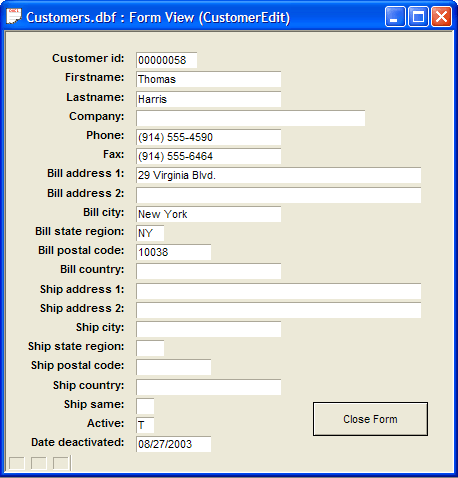

Put a Button on a Form to Open Another Form Showing Selected Records
This example shows how you can put a button on a form that will open another form and show a selected record. Your database should contain a form called "CustomerFormCompact," which shows the customer's address (as shown below) in a rich text object. This object is not editable. So you cannot change the customer's address on this form. You will put a button on the form to open another form (called "CustomerEdit," which has been pre-created for you) where you can edit the address.
- Navigate to the Forms tab on the Control Panel and open "CustomerFormCompact".
- Click the Design button to enter Design Mode.
- Click the Button Object tool on the Toolbox. Click and drag to draw a button on the form. When you release the mouse button, the Define Button dialog box appears.
- Select "Picture over Text" as theStyle.
- Enter "Edit Customer" as theLabel.
- Click the Define Picture button.
- Click the Internal radio button and then click the up arrow.

- In the resulting Insert Image dialog box select the image you want for your button. Choose any image you find appropriate.
-
Click Insert to close the dialog box.

-
The Define Button dialog should look like this:

- Make sure that the Define script for this button now? check box is checked and that Use Action Scripting is selected.
- Click Next >. The embedded Action Scripting Editor appears.

- Click the Add New Action button.
- Select the "Form/Browse" category and the "Open Form or Browse Layout" Action.
- Click OK.
- The Open Form or Browse Layout Genie appears.
- Select the "CustomerEdit" form.
- Click the Options tab. This screen allows you to set options, such as whether the form is to be opened as a normal (modeless) window, or a modal dialog box.

- The user should complete any edits before closing the CustomerEdit form. For Window Style, select "Dialog (form opens as a modal window)".
- Click Next > to move to the next Genie page. The next page allows you to select which records will be shown when CustomerEdit is opened. You want to show the same record that you were viewing in the current form.
- Select "Records that match the value in a Control on the current Form". The current form has a control (a field) that shows the "Customer id" field. You want to open the CustomerEdit form showing the same record.

- Complete the Filter tab as shown above.
- Click Next > and Finish to complete the action. The embedded Action Script Editor looks like this:

- Finish to close the Define Button dialog box and close the Action Script Editor.
- Click the Save button to save the form.
- Click the Form View button to run the form. Your screen should look like this:

- Click the Edit Customer button.
- The CustomerEdit form opens. Note that it's modal. You cannot click on any other part of the Alpha Anywhere screen.
- Make changes to an address value, then click the Close Form button.

- The dialog form closes and returns to the "CustomerFormCompact" form. Your edits should be visible in the form.

- In case you're curious about how the Close Form button on the CustomerEdit form was constructed, let's take a look at the script behind the "Close Form" button.
- Click the Forms tab on the Control Panel and select the CustomerEdit form.
- Click the Design button.
- Right-click the Close Form button and select Events > OnPush.
- When the Code Editor appears, >Close Form/Browse Action and Edit Action.

As you see in the Genie, the action closes the current form window, and automatically saves the record that the user is editing in the form.